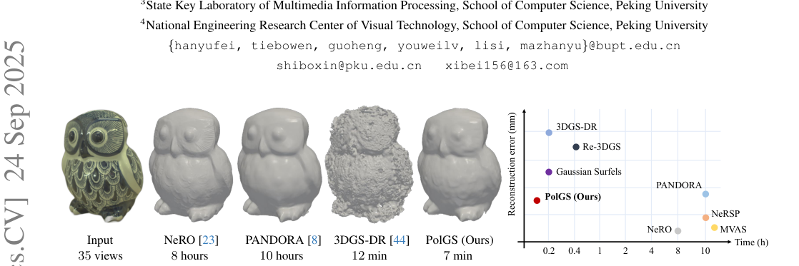
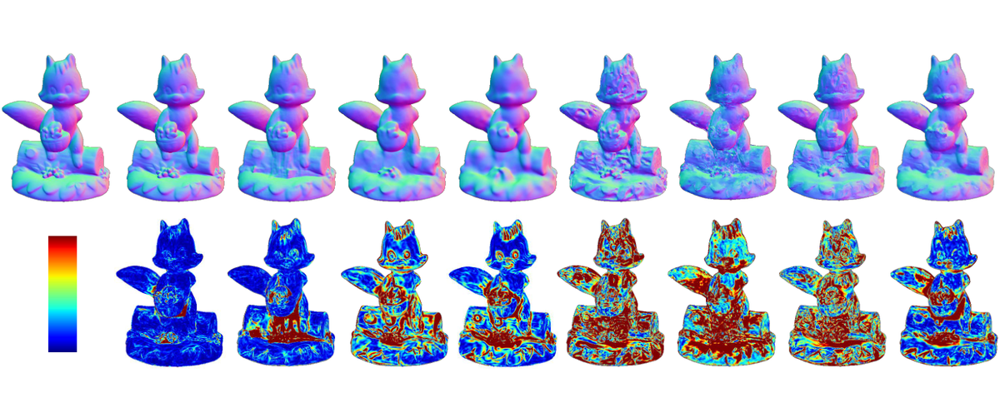
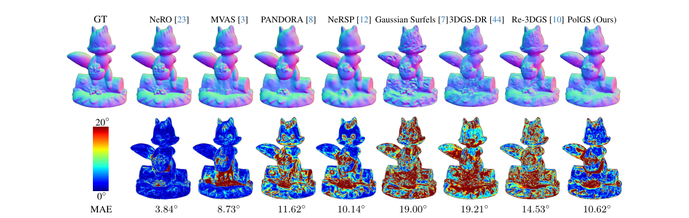

PolGS：用于快速反射表面重建的偏振高斯溅射
简单摘要
PolGS以具备更强几何表达能力的3DGS框架为基础，引入偏振成像机制来增强3D场景重建。传统3DGS将场景表示为一组无结构的高斯基元，通过泼溅光栅化和alpha混合进行新视图渲染。偏振相机能够在单次拍摄中捕获不同偏振角度的图像，利用Stokes矢量描述光的偏振状态。该工作假设入射环境光照为非偏振光，出射光因反射而变为部分偏振，通过Mueller矩阵建模出射Stokes矢量与入射Stokes矢量之间的关系。基于偏振BRDF（pBRDF）模型，出射Stokes矢量可分解为漫反射分量和镜面反射分量——漫反射分量涉及表面法线、菲涅尔透射系数和漫反射反照率；镜面反射分量涉及菲涅尔反射系数、半向量相关的入射方位角，并采用微面元模型中的法线分布和阴影项。PolGS将这一偏振物理模型嵌入3DGS框架中，利用偏振信息提供额外的几何约束来改善重建质量。
核心创新
(1) 将偏振成像物理模型（Stokes矢量、Mueller矩阵、偏振BRDF）系统性地嵌入3D Gaussian Splatting框架中；(2) 利用偏振相机单次拍摄即可捕获多角度偏振图像的特性，为3DGS提供额外的偏振约束；(3) 基于pBRDF模型将出射偏振光分解为漫反射和镜面反射两个分量，分别建模菲涅尔透射/反射效应和微面元几何属性；(4) 在高斯泼溅和alpha混合框架下统一处理深度、法线和偏振信息，利用偏振线索增强表面法线估计和几何重建精度。
技术细节
高斯面元模型我们选择 PolGS 作为我们的基础框架，因为它具有更强的几何表达能力。高斯泼溅根据 3D GS ，新颖的视图渲染过程可以表示为。为了加速渲染过程， 中的 3D 高斯在 2D 光线空间中重新参数化为。作者这样设计，是为了把这一节的输入、约束和输出关系讲清楚。
我们的 PolGS 框架集成了多视图偏振图像、其相应的掩模和相机姿态信息，以产生丰富的输出，其中包括表示为斯托克斯向量的漫反射和镜面反射分量。然后我们介绍了偏振引导重建管道的理论基础。因此，多个高斯核配置可以潜在地表示等效的表面几何形状，从而引入固有的重建模糊性。
3 预赛
高斯面元模型我们选择 PolGS 作为我们的基础框架，因为它具有更强的几何表达能力。高斯泼溅根据 3D GS ，新颖的视图渲染过程可以表示为。为了加速渲染过程， 中的 3D 高斯在 2D 光线空间中重新参数化为。作者这样设计，是为了把这一节的输入、约束和输出关系讲清楚。
3.1 高斯面元模型
我们选择 PolGS 作为我们的基础框架，因为它具有更强的几何表达能力。高斯泼溅根据 3D GS ，新颖的视图渲染过程可以表示为。为了加速渲染过程， 中的 3D 高斯在 2D 光线空间中重新参数化为。作者这样设计，是为了把这一节的输入、约束和输出关系讲清楚。
$$ G(\mathbf{x};\mathbf{x}_i,\Sigma_i)=\text{exp}(-\frac{1}{2}(\mathbf{x}-\mathbf{x}_i)^\top\Sigma_i^{-1}(\mathbf{x}-\mathbf{x}_i)), $$
这条式子给出了高斯面元在原始三维空间中的响应函数：离中心越近，权重越高；协方差则控制它沿不同方向扩散得多宽。它是后续投影、渲染和几何约束建立的基础。
$$ \begin{aligned} \Sigma_i &= \mathbf{R}(\mathbf{r}_i)\mathbf{s}_i\mathbf{s}_i^\top\mathbf{R}(\mathbf{r}_i)^\top\\ &= \mathbf{R}(\mathbf{r}_i)\text{Diag}[(s^x_i)^2,(s^y_i)^2,0]\mathbf{R}(\mathbf{r}_i)^\top, \end{aligned} $$
这条式子是在构造高斯的协方差：先用各方向尺度定义局部形状，再通过旋转矩阵把它转到目标朝向。这样每个高斯既能表达表面的拉伸方向，也能表达局部法线朝向。
$$ C=\sum_{i=0}^nT_i\alpha_ic_i, $$
放在“预赛”这一部分看，它重点在定义或约束 C 这一项。这条式子描述了多个分量的聚合或逐步合成过程。它通常表示模型如何把局部贡献、概率权重或多项损失累积成最终结果。
$$ G'(\mathbf{u};\mathbf{u}_i,\Sigma'_i)=\text{exp}(-\frac{1}{2}(\mathbf{u}-\mathbf{u}_i)^\top {\Sigma'_i}^{-1}(\mathbf{u}-\mathbf{u}_i)), $$
这条式子给出了高斯面元投影到图像平面后的二维响应形式。相比三维空间核，它更直接决定某个高斯会如何覆盖像素邻域以及以什么权重参与屏幕空间合成。
$$ \tilde{D}=\frac{1}{1-T_{n+1}}\sum_{i=0}^{n}T_i\alpha_id_i(\mathbf{u}), $$
这条式子是在把所有可见高斯提供的局部深度值按透射率和透明度加权平均，得到最终渲染深度。它的作用是把分散在多个高斯上的几何信息汇总成单个像素的稳定深度估计。
$$ \tilde{N}=\frac{1}{1-T_{n+1}}\sum_{i=0}^{n}T_i\alpha_i\mathbf{R}_i[:,2]. $$
这条式子是在聚合多个高斯的局部朝向，得到最终像素对应的表面法线。作者这样做，是为了让法线估计跟可见性和混合权重保持一致，而不是单独从某个高斯硬性读取方向。
$$ d_i(\mathbf{u}) = d_i(\mathbf{u}_i) + (\mathbf{W}_k\mathbf{R}_i)[2,:]\mathbf{J}_{pr}^{-1}(\mathbf{u}-\mathbf{u}_i), $$
这条式子是在局部投影平面里，用一阶线性化近似把像素偏移转换成深度变化。这样模型就能在不显式追踪完整曲面的情况下，估计屏幕空间邻域里的几何变化。
3.2 偏振成像模型
围绕 3.2 偏振成像模型，偏光相机可以单次拍摄偏振图像，可以表示为不同偏振角度的图像。这里我们假设光源不是圆偏振的，因此 是 0。根据 和 ，假设入射环境照明是非偏振的，则入射光方向的斯托克斯矢量可表示为。
$$ S = \begin{bmatrix}\frac{1}{2} (I_0+I_{45}+I_{90}+I_{135})\\ I_{0}-I_{90}\\ I_{45}-I_{135}\\ 0 \end{bmatrix}, $$
这条式子把四个偏振角观测组合成斯托克斯向量。它的作用是把原始偏振强度重新整理成更有物理意义的表示，后面法线恢复和反射分解都会基于这组量展开。
$$ \V{s}_i(\boldsymbol{\omega}) = L(\boldsymbol{\omega}) [1, 0, 0, 0]^\top, $$
这条式子把前面若干观测、条件或中间特征，经过一个显式模块映射成新的状态变量。它的意义在于把复杂流程压缩成清晰的函数接口，方便后续模块继续消费这个中间结果。
$$ \V{s}(\V{v}) = \int_{\Omega} \V{H} \V{s}_i(\boldsymbol{\omega}) \,\, d\boldsymbol{\omega}, $$
放在“预赛”这一部分看，这条式子重点不是孤立地罗列符号，而是交代 这一项中间量 如何承接前面的输入并把结果交给后续步骤。
4 提议的方法
我们的 PolGS 框架集成了多视图偏振图像、其相应的掩模和相机姿态信息，以产生丰富的输出，其中包括表示为斯托克斯向量的漫反射和镜面反射分量。在本节中，我们将分析基于 SDF 的方法和 3DGS 方法中使用的表面法线表示。然后我们介绍了偏振引导重建管道的理论基础。作者这样设计，是为了把这一节的输入、约束和输出关系讲清楚。

4.1 表面法线表示分析
围绕 4.1 表面法线表示分析，因此，多个高斯核配置可以潜在地表示等效的表面几何形状，从而引入固有的重建模糊性。该优化机制有效地融合了多个高斯点的贡献，这提供了重建适应性，但会损害单个点几何表征的精度。很明显，在高斯分布中使用法线预测模型作为先验约束有利于对象重建，如 所示。
与传统的 RGB 图像输入不同，偏振信息可以在使用 pBDRF 模型渲染斯托克斯矢量期间有效地约束表面法线。具体来说，如 中所示， 和 的漫反射和镜面反射分量与物体的表面法线表现出很强的相关性。利用这一特性，我们将偏振信息作为形状重建的先验，并使用基于 3DGS 的方法来加速这一过程。这一步的作用，是把当前结果继续传给后面的模块或训练目标。
4.2 聚合酶链反应
网络结构 在本节中，我们介绍我们提出的 PolGS，这是一种新颖的 3D 重建方法，它将高斯分布方法与偏振信息相结合。最初，采用高斯面元模块来估计物体的漫反射分量，看起来像。为了增强渲染过程，我们将 pBRDF 模型合并到渲染公式中。作者这样设计，是为了把这一节的输入、约束和输出关系讲清楚。
4.3 训练
渲染斯托克斯损失 和 渲染斯托克斯损失与（非偏振图像）渲染损失组合为 3DGS，渲染损失为。mask loss mask loss用于使物体的渲染结果更加准确，可以表示为。深度-法线一致性损失 深度-法线一致性损失随之而来，使渲染的物体深度和法线更加一致。作者这样设计，是为了把这一节的输入、约束和输出关系讲清楚。


实验结论
## 实验设置
**数据集。** 使用三个数据集评估：合成数据集、真实世界数据集以及仅用于定性评估的额外数据集。对比方法包括SDF类方法（Neuralangelo、NeRO、PISR、GSDR等）和3DGS类方法（3DGS、GS-IR、SpecGS等），其中PISR和GSDR利用偏振信息重建形状。所有实验均不添加法向先验。
**评估指标。** Chamfer Distance (CD)评估形状恢复性能，平均角度误差(MAE)评估表面法向估计质量。
**实现细节。** 在NVIDIA RTX 4090 GPU（24GB）上进行，PyTorch 1.12.1实现，Adam优化器。采用预热策略训练，1000次迭代后加入偏振信息和延迟渲染。
## 合成数据集结果
在含5个空间变化反射特性物体的合成数据集上，PolGS有效利用偏振信息，显著改善几何表面性能，达到最低平均Chamfer Distance，确认其在3DGS技术中的最佳性能。
## 真实世界数据集结果
在真实场景中，PolGS的重建结果与SDF类方法更加接近，同时显著优于其他3DGS方法。例如Vase案例中PolGS在数分钟内精确估计陶瓷表面形状，Frog样本凸显PolGS重建粗糙光泽表面物体的能力。
## 辐射分解
对比不同方法的漫反射与镜面反射成分分解。PolGS利用额外偏振信息有效约束和消歧漫反射与镜面成分，分解结果与PISR紧密对齐。
## 消融实验
在合成和真实数据集上评估偏振信息对表面重建的贡献。整合偏振信息持续提升两类数据集上的重建精度。对于无纹理表面，偏振信息通过提供额外几何约束显著贡献重建质量。随输入视图数量减少，偏振的优势更加明显。
## 结论
PolGS是一种新颖的偏振高斯散点法，通过基于Stokes场的偏振信息分离漫反射和镜面反射分量，约束高斯散点表示中的表面法向，最终改善反射表面重建结果。
理解评价
如果把这篇论文放回问题背景里看，它真正的价值在于：合成数据集和真实数据集的实验结果验证了我们方法的有效性。这说明作者不是只补一个局部模块，而是在重新组织问题该怎样被解决。
最能支撑这个判断的，还是实验给出的证据：然后我们介绍偏振引导重建管道的理论基础。换句话说，这些设计并不只是概念上更完整，而是实实在在改变了最终结果。
当然，它离真正成熟的方案还有距离：当前方案的主要局限在于它仍然受到计算资源、输入质量或场景复杂度的约束，离真正大规模稳定部署还有距离。后续更值得继续推进的方向，是 未来继续提升效率、泛化能力以及在更复杂场景下的稳定性。